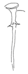
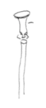
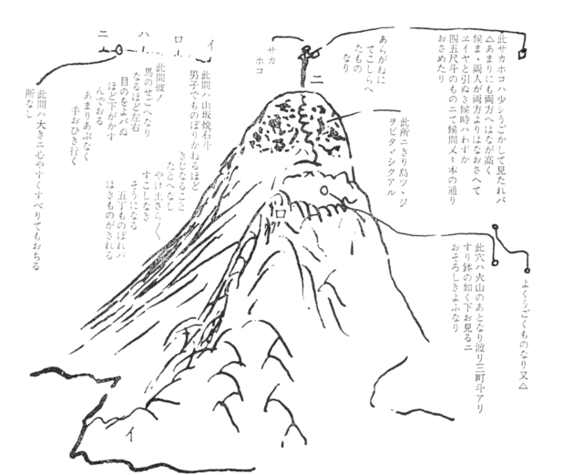

| 手紙 044 慶応二年十二月四日 坂本乙女あて | |
| 坂本 竜馬 | |
| (2012) | |
手紙
慶応二年十二月四日 坂本乙女あて
坂本龍馬
おとめさんにさし上る。
兼而
申上妻龍女ハ、望月亀弥太が戦死の時のなん
にもあい候もの、又御国より出候もの此家ニて大ニセ話ニなり候所、此家も国家をうれへ候より家をほろこし
候也。老母一人、龍女、いもと両人、男の子一人、かつへ
〳〵ニて、どふもきのどくニて、龍女と十二歳ニなる妹と九ツニなる男子をもらい候て、十二歳の妹名きみへ、男子太一郎ハ摂州神戸海軍所の勝安房ニ頼ミたり。龍女事ハ伏見寺田や家内おとせニ頼ミ候。（是ハ学文ある女尤人物也。）今年正月廿三日夜のなんにあいし時も、此龍女がおれバこそ、龍馬の命ハたすかりたり。京のやしきニ引取て後ハ小松、西郷などにも申、私妻と為レ
知
候。此よし兄上ニも御申可レ
被レ
遣候。御申上なれバ、
京師柳馬場三条下ル所、
楢崎将作（死後五年トナル。）
右妻存命
私妻ハ則、将作女也。
今年廿六歳、父母の付
たる名龍、私が又鞆
トあらたむ。
此所にすミしが、
国家のなんとともニ
家ハほろびあとなく
なりしなり。
［＃ここで段組み終わり］
正月廿三日ののちナリ。
京の屋鋪ニおる内、二月末ニもなれバ嵐山にあそぶ人〻、なぐさみにとて桜の花もて来り候。中ニも中路某の老母（神道学者奇人也）ハ実おもしろき人也。和歌などよくで来候。此人共私しの咄しおもしろがり、妻をあいして度々遣
をおこす。此人ハ曽て中川宮の姦謀を怒り、これおさし殺さんとはかりし人也。本
禁中ニ奉行
しておれ
バ、右よふの事ニハ、尤遣所おゝき人ナリ。公卿方など不レ
知者なし。是より三日大坂ニ下り、四日に蒸気船ニ両人共ニのり込ミ、長崎ニ九日ニ来り十日ニ鹿児島ニ至り、此時京留居
吉井幸助
もどふ〳〵
ニて、船中ものがたりもありしより、又温泉ニともにあそバんとて、吉井がさそいにて又両
りづれにて霧島山
の方へ行道にて日当山
の温泉ニ止
マリ、又しおひたしと云温泉に行。此所ハもお大隅
の国ニて和気清麻呂がいおり
おむすびし所、蔭見の滝
其滝の布ハ五十間も落て、中程にハ少しもさわりなし。実此世の外かとおもわれ候ほどのめづらしき所ナリ。此所に十日計も止りあそび、谷川の流にてうおゝつり、短筒
をもちて鳥をうちなど、まことにおもしろかりし。是より又山深く入りてきりしまの温泉に行、此所より又山上ニのぼり、あまのさかほ
を見んとて、妻と両人づれニてはる〴〵のぼりしニ、立花
氏の西遊記ほどニハなけれども、どふも道ひどく、女の足ニハむつかしかりけれども、とふ〳〵馬のせこへまでよぢのぼり、此所にひとやすみして、又はる〴〵とのぼり、ついにいたゞきにのぼり、かの天
のさかほこを見たり。其形ハ
是ハたしかに天狗の面ナリ。両方共ニ其顔がつくり付てある。からかね也。

まむきに見た所也。

やれ〳〵とこしおたゝいて、はるバるのぼりしニ、かよふなるおもいもよらぬ天狗の面があり
、大ニ二人りが笑たり。此所に来れバ実ニ高山なれバ目のとゞくだけハ見へ渡り、おもしろかりけれども何分四月でハまださむく、風ハ吹ものから、そろ〳〵とくだりしなり。なる程きり島つゝじが一面
にはへて実つくり立し如くきれいなり。其山の大形
ハ、

霧島山より下り、きり島の社にまいりしが是は実大きなる杉の木があり、宮もものふり極とふ
とかりし。其所ニて一宿、夫より霧島の温泉の所ニ至ルニ、吉井幸助もまちており、とも〴〵にかへり、四月十二日ニ鹿児島ニかへりたり。夫より六月四日より桜島と言、蒸気船ニて長州へ使を頼まれ、出船ス。此時妻ハ長崎へ月琴の稽古ニ行たいとて同船したり。夫より長崎のしるべの所に頼ミて、私ハ長州ニ行けバはからず別紙の通り軍をたのまれ、一戦争するに、うんよく打勝、身もつゝがなかりし。其時ハ長州侯ニもお目ニかゝり色〻御咄しあり、らしや
の西洋衣の地など送られ、夫より国ニ
かへり、其よしを申上て二度長崎へ出たりし時ハ、八月十五日ナリ。世の中の事ハ月と雲、実ニどフなるものやらしらず、おかしきものなり。うちにおりてみそよたきゞよ、年のくれハ米うけとりよなどよりハ、天下のセ話ハ実ニおふざツパ
いなるものニて、命さへすてれバおもしろき事なり。是から又春になれバ妻ハ鹿児島につれかへりて、又京師の戦はじまらんと思へバ、あの方へも事ニより出かけて見よふかとも思ひよります。私し其内ニも安心なる事ハ、西郷吉之助の家内も吉之助も、大ニ心のよい人なれバ此方へ妻などハ頼めバ、何もきづかいなし。
此西郷と云人ハ七年の間、島ながしニあふた人にて候。夫と言も病のよふニ京の事がきになり、先年初て「アメリカ」ヘルリ」が江戸ニ来りし頃ハ、薩州先
ン侯
の内命ニて水戸に行、藤田虎之助
の方ニおり、其後又其殿様が死なれてより、朝廷おうれ
い候ものハ殺され、島ながしニあふ所に、其西郷ハ島流の上ニ其地ニてろふ
ニ入てありしよし、近頃鹿児島にイギリスが来て戦がありてより国中一同、彼西郷吉之助を恋しがり候て、とふ〳〵引出し今ハ政をあづかり、国の進退此人にあらざれバ一日もならぬよふなりたり。
人と言ものハ短気してめつたニ死ぬものでなし。又人おころすものでなしと、人〻申あへり。まだ色〻申上度事計なれども、いくらかいてもとてもつき不レ
申、まあ鳥渡
した事さへ、此よふ長くなりますわ。かしこ〳〵。
極月四日夜認
龍馬
乙様
底本：「龍馬の手紙」宮地佐一郎、講談社学術文庫、講談社
２００３（平成15
）年12
月10
日第1
刷発行
２００８（平成20
）年9
月19
日第7
刷発行
※底本手紙の写真のキャプションに、（京都国立博物館蔵）とあります。
※丸括弧付きの語句は、底本編集時に付け加えられたものです。
入力：Yanajin33
校正：Hanren
２０１０年8
月26
日作成
２０１１年6
月17
日修正
青空文庫作成ファイル：
このファイルは、インターネットの図書館、青空文庫（http://www.aozora.gr.jp/）で作られました。入力、校正、制作にあたったのは、ボランティアの皆さんです。